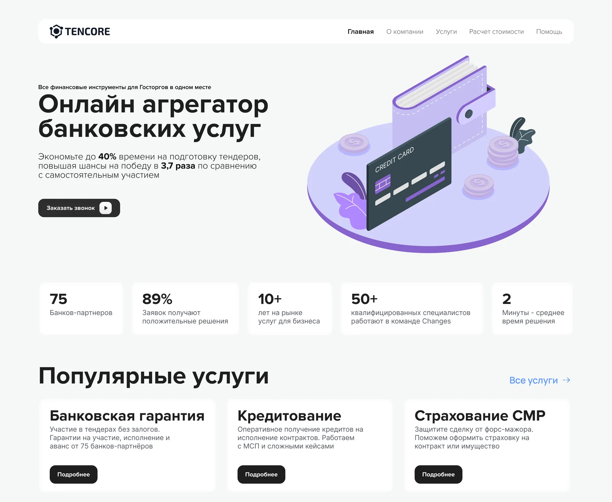
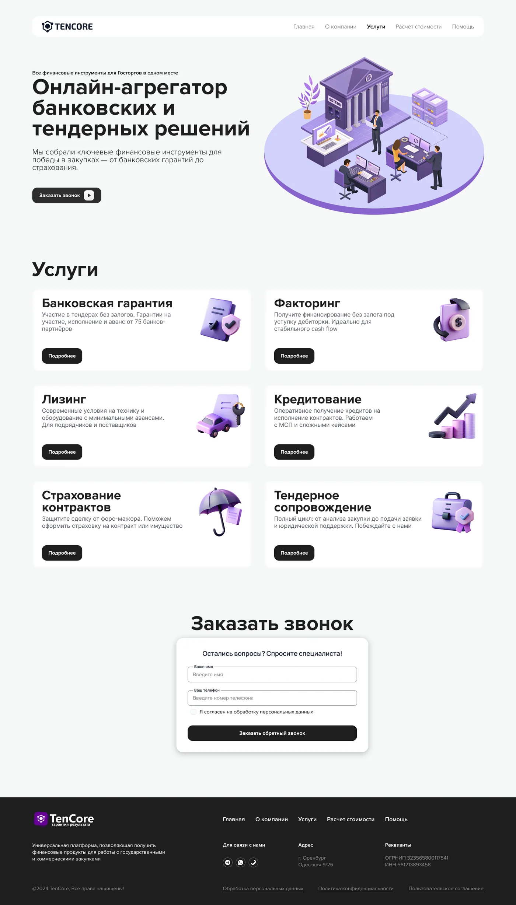
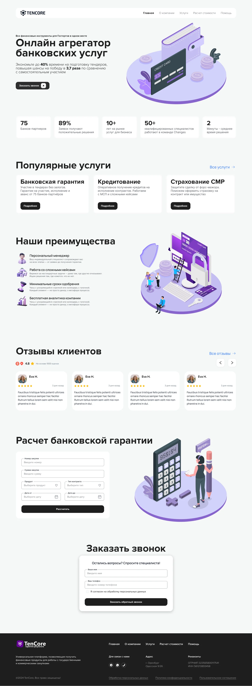
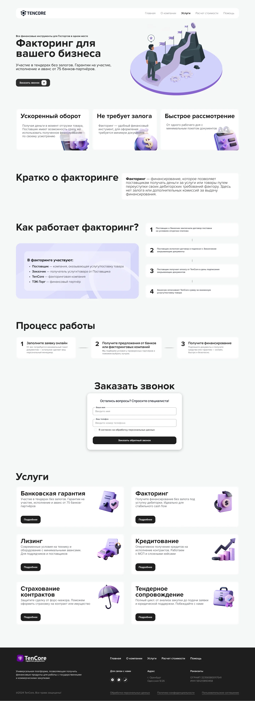

FINTECH · WEB · B2B · САЙТ
Tencore: агрегатор банковских услуг для тендеров
Сайт-платформа, на которой участник тендера за пару кликов оставляет заявку на банковскую гарантию и другие финансовые продукты для госзакупок.


МОЯ РОЛЬ
Я отвечал за дизайн сайта: структуру, UI страниц, шаблон страницы услуги, формы и калькулятор стоимости, а также за визуальный язык с изометрической графикой. Цель: чтобы участник тендера за секунды понял сервис и дошёл до заявки.
КОРОТКО О КЕЙСЕ
Tencore - универсальная платформа, которая помогает получить финансовые продукты для работы с государственными и коммерческими закупками. Нужен был сайт, который за секунды объясняет, что это, вызывает доверие и ведёт к заявке, расчёту стоимости или звонку менеджера.
Для кого и зачем
Участники тендеров по 44-ФЗ, 223-ФЗ и 615-ПП тратят время на поиск банков и разбор условий. Сайт должен сократить этот путь, объяснить продукты простым языком и вызвать доверие.
Из чего выросли решения
Три вывода из задачи и ролей посетителей определили структуру сайта и порядок блоков.
Пока не видно цифр и партнёров, посреднику не верят.
Показатели и партнёры сразу под оффером на главной.
Гарантия и факторинг непонятны без объяснения процесса.
Единый шаблон страницы услуги: преимущества, «Как работает» и три шага.
Одним нужна заявка, другим расчёт или разговор.
Призывы «Заявка на БГ», «Стать агентом» и «Заказать звонок», плюс калькулятор.
Пять решений для сайта
Сайт небольшой, поэтому решения собраны в один блок: что я сделал на каждом экране.
Оффер, цифры доверия и популярные услуги в порядке вопросов клиента.
Шесть продуктов в едином формате карточки, сетка 2×3.
Один шаблон: преимущества, «Как работает», три шага.
Только нужные поля и отдельная страница с FAQ.
Два поля и одна кнопка на каждой странице.


Что получилось
Сайт-агрегатор с шестью финансовыми продуктами для тендеров, калькулятором стоимости и формой заказа звонка. Цифры ниже описывают состав дизайна, а не бизнес-метрики.
Что я вынес из проекта
Единый язык: лавандовая палитра, изометрические 3D-иллюстрации и чёрные кнопки главного действия смягчили сухую финансовую тему.
Объяснить шесть финансовых продуктов простым языком и не перегрузить страницы текстом.
На сайте четыре показателя вместо пяти, оффер усилен цифрами «до 40% времени» и «в 3,7 раза», появились страницы расчёта, FAQ, «Стать агентом» и «Заявка на БГ».
Для команды этой же компании позже проектировалась внутренняя CRM.
Другие проекты
Можете ознакомиться с моими другими проетами